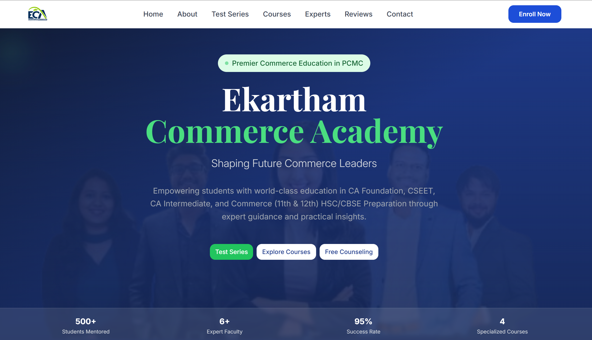
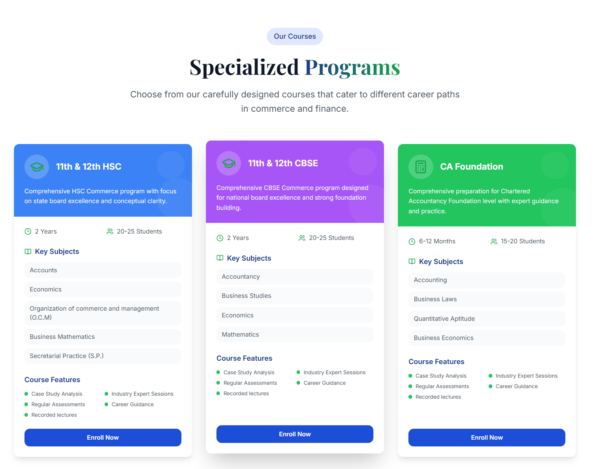
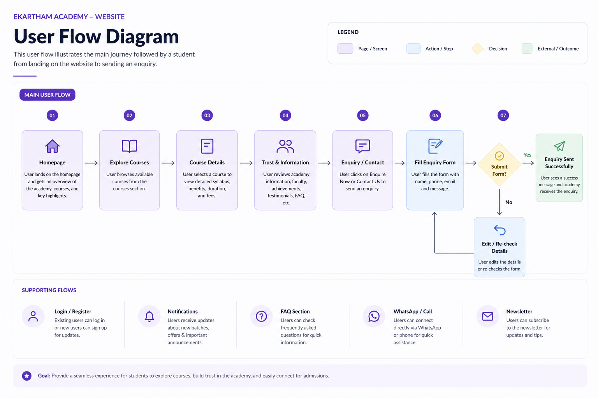

UX/UI Case Study
Ekartham Academy – Academy Website (Live Project)
A responsive academy website designed to improve course discovery, trust, and student enquiries.
Overview
Ekartham Academy is a live academy website project designed to provide a structured and professional digital presence. The website helps students explore courses, understand the academy’s offerings, and easily reach out for admission and enquiries through a clean, responsive UI experience.

Problem
Many students struggle to find clear information about courses, fees, and academy credibility. The previous website experience lacked structured navigation, modern UI, and strong call-to-actions, which reduced user trust and enquiry conversions.
Solution
Ekartham Academy website enables users to:
- Explore courses with clear categorization
- Understand academy benefits and learning outcomes
- Build trust through testimonials and highlights
- Send enquiries quickly through CTA and contact forms
This improves student engagement and helps the academy generate more qualified leads.

My Approach
I followed a structured design process:
Research → Information Architecture → Wireframes → UI Design → Responsive Refinement
Key UX Flow
The core flow focuses on:
Homepage → Course Exploration → Course Details → Trust Sections → Contact / Enquiry
Supporting sections include about academy, testimonials, FAQ, and a consistent footer navigation to improve accessibility and user confidence.
Design System / Style Guide
- Clean typography (Poppins)
- Consistent UI components (buttons, cards, forms)
- Minimal layout for clarity and readability
- Strong visual hierarchy for better course discovery
Outcome
Ekartham Academy website delivers a modern, responsive, and user-friendly experience that improves course discoverability, builds student trust, and increases enquiry conversion through clear CTA placement.
User Flow Diagram
